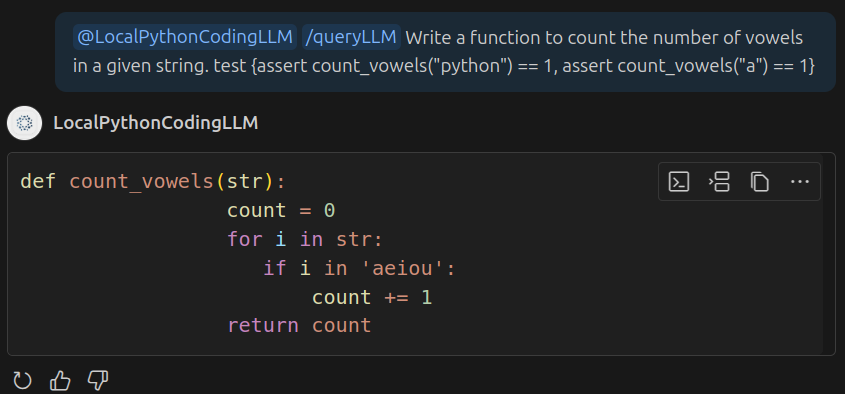

LocalPythonCodingLlm
VSC Extension running a small LLM locally to genenerate Python Code based on Description and Tests
 View on GitHub
View on GitHub
Download my résumé for a concise overview of my skills, experience, and projects
Grab A CopyVSC Extension running a small LLM locally to genenerate Python Code based on Description and Tests
View on GitHub
VSC Extension running a small LLM locally to genenerate Python Code based on Description and Tests
GitHubA small website with the Collection of the Past Multiple Choice questions of public Exams, to help practice!
GitHub